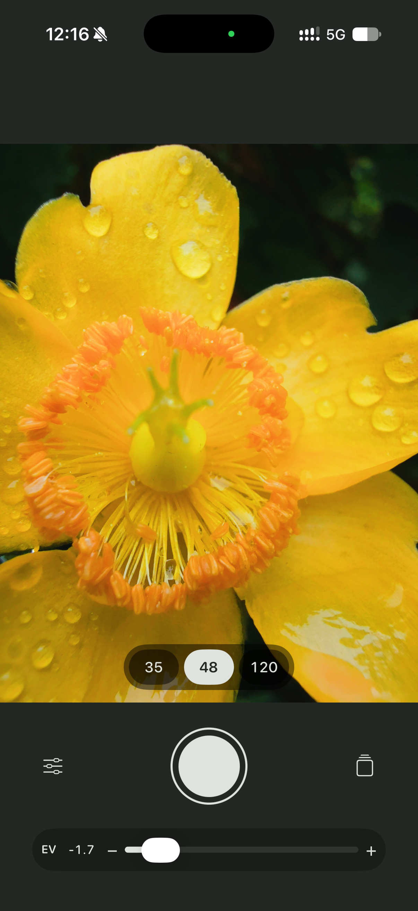
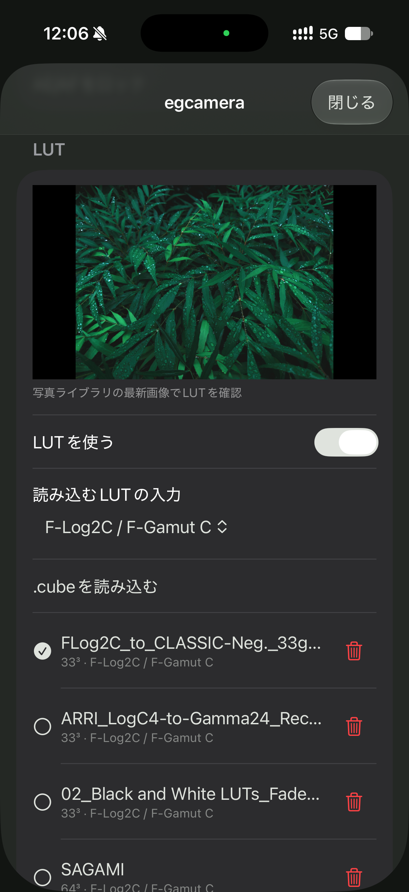
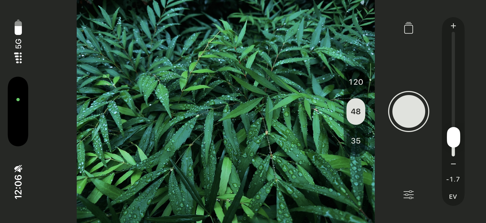
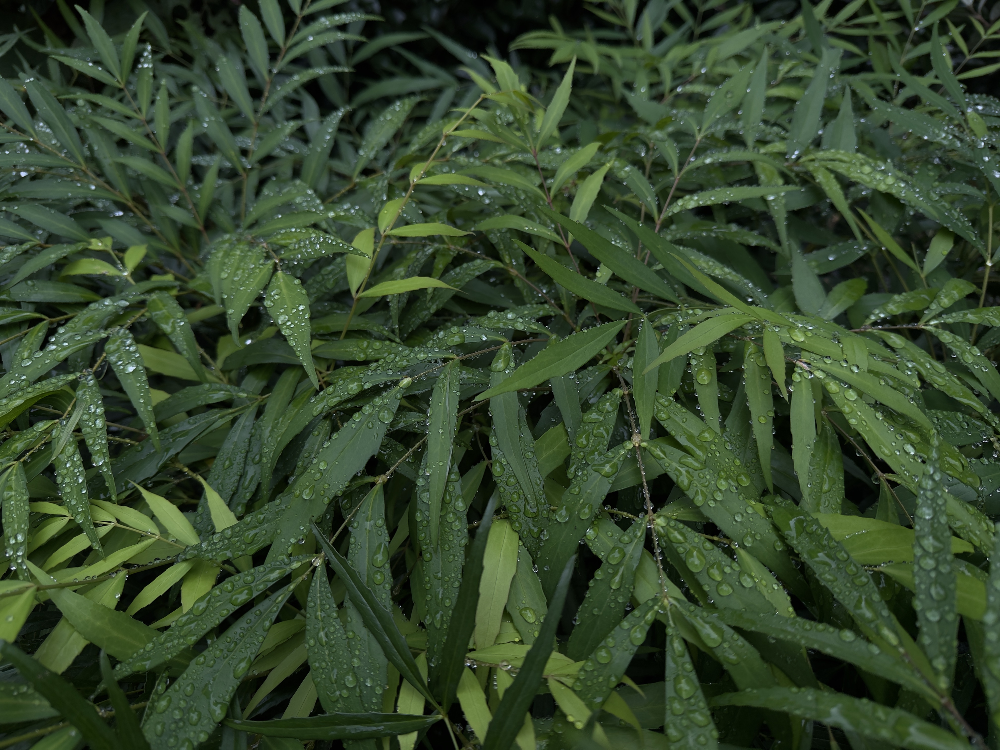
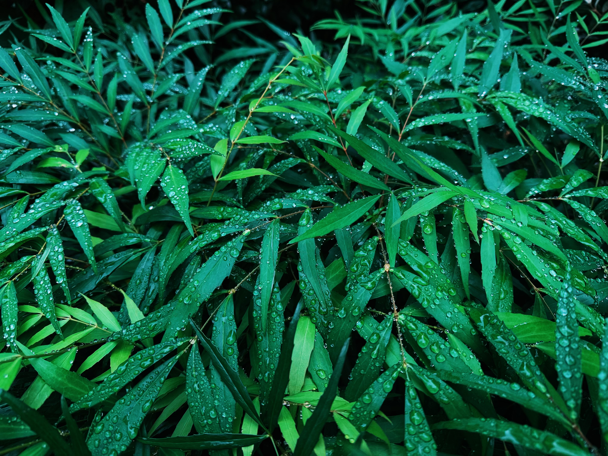
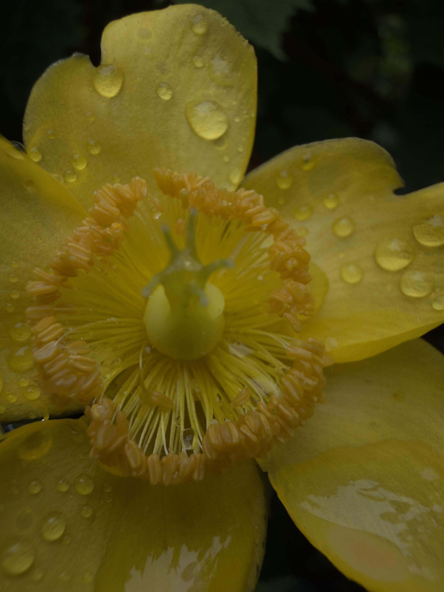
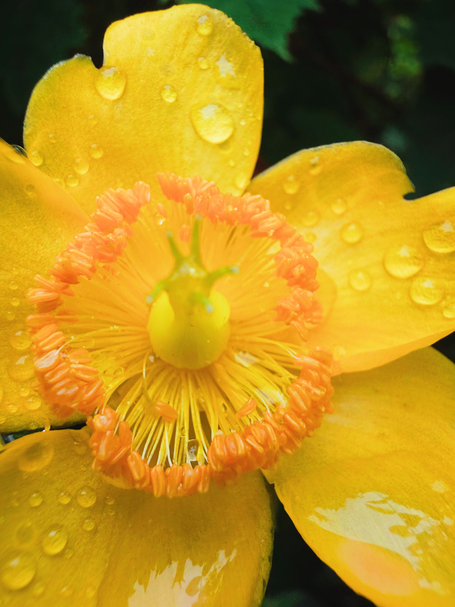

どんなアプリ？
egcamera は、写真の色味を変える LUT を選び、その効果をファインダーで確認しながら撮影するアプリです。LUT 適用済みの HEIC（HEIF 形式）を保存し、「RAWの保存」をオンにすると、後で編集できる LUT 未適用の Apple ProRAW DNG も残せます。RAW と LUT の設定によって、保存する写真は次のように変わります。
| RAWの保存 | LUT | 保存する写真 |
|---|---|---|
| オン | 選択・有効 | LUT 適用 HEIC ＋ LUT 未適用 DNG（独立した2枚） |
| オン | 未選択・オフ | DNG のみ |
| オフ | 選択・有効 | LUT 適用 HEIC のみ |
| オフ | 未選択・オフ | LUT 未適用 HEIC のみ |
HEIC は iPhone が生成した処理済み画像を元にし、DNG をアプリ内で現像した画像ではありません。Apple ProRAW もセンサーの未処理 RAW とは異なります。RAW オフでは DNG を生成・保存しません。
「HDRを使用」は HEIC の保存に適用します。撮影元に利用できる HDR 情報があれば HDR ゲインマップ付きで保存し、なければ SDR 保存を通知します。オフにすると SDR で保存します。ファインダーと LUT 見本は SDR 表示で、DNG はこの設定の影響を受けません。RAW と HDR は初期状態でオンです。
動画、Live Photos、ポートレート、ナイトモード相当の撮影には対応していません。
主な機能
- 対応範囲内の3D
.cubeLUT を読み込み、複数保存。選択した LUT をファインダーと完成 HEIC に適用します。 - 撮影画面の「35 / 48 / 120」で画角を切り替え。設定には「13 / 24 / 24 接写 / 35 / 48 / 120 mm 相当」があり、起動時は通常の35 mmです。mm は換算画角の目安で、実画角の校正は継続中です。
- 選択中の35 / 48 / 120ボタンを再タップすると、白い通常モードから黄色の接写へ、さらにタップすると通常へ戻ります。別の画角を選ぶ場合や大きな構図変化を検出した場合も通常へ戻ります。24 mmの接写は設定から選びます。
- 通常の13 mmは超広角、24 / 35 / 48 mmはメイン、120 mmは望遠を使用。接写の24 / 35 / 48 mmは超広角、120 mmはメインのクロップです。最大対応解像度を要求しますが、クロップや撮影条件で実画素数は下がり、全条件48 MPを保証するものではありません。
- 露出補正（−3〜＋2 EV）、フラッシュ、3秒／10秒タイマー、水平器に対応。ファインダーをタップすると、その位置で一度ピントを合わせて保持します。再タップで更新し、最長10秒・大きな構図変化・画角や接写の変更・状態アイコンの操作で継続 AF に戻ります。露出は自動を維持します。
- カメラコントロールからの起動とシャッター操作に対応。ロック中は LUT や通常設定を使わず DNG を撮影し、「LUT撮影へ」から認証して通常アプリへ移ります。ロック中の撮影・保存は個別の実機確認を継続しています。
基本的な使い方
- アプリを開き、カメラの使用を許可します。写真への追加権限は最初の保存時に求められます。
- 設定の「読み込むLUTの入力」で、使う LUT に合う入力を選びます（初期値は F-Log2C / F-Gamut C）。続いて「選択LUTの管理 → .cubeを読み込む」で追加し、使う行をタップして「LUTを使う」をオンにします。新しい LUT は未選択で一覧の先頭に追加され、既存の選択は維持されます。入力の変更は次の読み込みに適用され、登録済み LUT は変わりません。
- 撮影画面で構図と画角を決め、必要に応じて露出を調整してシャッターを押します。EV スライダーのトラックやポインタをダブルタップすると0へ戻ります。RAW・HDRの保存設定も撮影前に確認してください。
- 撮影後、写真ライブラリで保存された画像を確認します。画面の写真ボタンはシステムの写真ピッカーを開きます。保存画像の確認は写真.appで行ってください。保存中はリングが表示されます。省電力・高温・連続撮影中は保存が待機することがあります。設定の「保存の保留中」で状態を確認し、失敗した写真は「保留画像を再保存」から再試行します。
設定と写真ピッカーは縦持ちで操作してください。「選択LUTの管理」を開くと、LUT 見本のために写真の読み取り・書き込み権限も求められます。見本には直近保存した DNG を使い、読めない場合は許可された最新写真を使います。見本は表示専用で、保存済み写真を変更しません。許可しなくても、カメラと追加保存の権限があれば撮影できます。

「35 / 48 / 120」で画角を選び、EV スライダーで明るさを調整します。左下の設定ボタンから LUT を読み込み、中央のシャッターで撮影します。

現行版は設定で入力を選び、「選択LUTの管理」で読み込み・選択・並び替えを行います。見本・「LUTを使う」・読み込みボタンは固定され、一覧だけをスクロールします。この写真は旧版の配置です。

現行版は撮影画面の縦配置を保ち、数字とアイコンを端末の向きに合わせて回転します。写真は撮影時の向きで保存します。この写真は旧版の横向き配置です。画面写真はクリックすると拡大できます。
画面写真は2026年9月30日に提供された旧版の実画面で、現行版の配置や操作と異なります。LUT 設定の写真にある ARRI / SAGAMI の「F-Log2C / F-Gamut C」表示は、撮影時点の登録設定であり、各 LUT の推奨入力を示すものではありません。読み込み済み LUT の入力設定を変えるには、正しい入力を選んで読み込み直してください。
撮影サンプル：LUT あり／なしを比較
中央のバーを左右にドラッグすると、同じ構図の写真を重ねて比較できます。左側が「LUT あり」、右側が「LUT なし（RAW 現像）」です。スマートフォンでは指で左右に動かせます。キーボードでは Tab で比較画面を選び、左右の矢印キーで調整できます。
LUT ありは egcamera で LUT を適用して撮影した写真、LUT なしは LUT 未適用の RAW から現像した写真です。現像処理による違いも含む、実際の撮影結果の比較です。作例は2026年9月30日に提供され、その後の入力変換・HDR・ファインダーの改良前に撮影されたものです。現行版の色や画質の検証結果を示すものではありません。
緑の葉 — CLASSIC Neg.
使用 LUT：FLog2C_to_CLASSIC-Neg._33grid_V.1.00.cube


黄色い花 — ARRI LogC4 → Rec.709
使用 LUT：ARRI_LogC4-to-Gamma24_Rec709-D65_v1_33.cube


試してみたい LUT サンプル
色づくりを試す候補として、次の4種類を紹介します。配布元の利用条件と入力形式を確認し、ZIP を解凍して中の .cube ファイルを使います。Sony の例は現行アプリに対応する入力変換がないため、入手先の紹介として掲載しています。
現行版の入力設定は「sRGB」「F-Log2C / F-Gamut C」「ARRI LogC4 / AWG4」「CINE2 / Pro（近似・試験用）」です。LUT ファイルの読み込み対応と、配布元が想定した色の再現は別です。以下の入力条件も確認して選んでください。
FUJIFILM — CLASSIC Neg.
FUJIFILM の 3D-LUT 配布ページ ↗で「GFX ETERNA 55」の「Download」を選び、gfx-eterna-55-3d-lut-v110.zip を解凍します。
FUJIFILM のフィルムシミュレーション紹介ページ ↗では、フィルムシミュレーションごとの作例と特徴を紹介しています。色味を選ぶ参考になりますが、egcamera で同じ仕上がりを保証する作例ではありません。
gfx-eterna-55-3d-lut-v110 / 33Grid / F-Log2C / FLog2C_to_CLASSIC-Neg._33grid_V.1.00.cube
読み込む前に入力を「F-Log2C / F-Gamut C」にします。現行版は線形 sRGB から F-Gamut C への色域変換と公式 F-Log2C 曲線を使用します。iPhone の処理済み画像を元にするため、富士フイルム機の色や Log 撮影のダイナミックレンジを再現するものではありません。
SONY — Dreamy Night
Sony の「Color of CINEMA」LUT 配布ページ ↗から、Y2氏の「Dreamy Night」を入手できます。My Sony ID の登録・ログインが必要です。
LUT DOWNLOAD → Y2 → Dreamy Night → ダウンロード → 02_Dreamy_Night_cube.zip → 02_Dreamy_Night_cube.cube
ほかのクリエイターの LUT も「LUT DOWNLOAD → 各 LUT の『詳細を見る』→ 無料ダウンロード → My Sony ID にログイン」から .cube ファイルをダウンロードできます。
公式作例の入力は S-Log3 / S-Gamut3.Cine です。現行の egcamera には、この入力変換がありません。「CINE2 / Pro（近似・試験用）」も代替にはならず、配布元が想定した色を得られる対応 LUT としては案内していません。Dreamy Night 本体の読み込みと実機での仕上がりは未検証です。
配布元はダウンロードした本人の個人利用に限る旨と、商用利用・SNSでの拡散を控える旨を案内しています。利用条件は配布ページで確認してください。
ARRI — LogC4 → Rec.709
ARRI の LUT 配布ページ ↗の「Downloads」から「LogC4 LUT Package」を開き、「DOWNLOAD」で入手した ARRI - LogC4 LUT Package_data.zip を解凍します。ページ内の LUT Generator は LogC3 用なので、LogC4 は配布パッケージを使います。
ARRI_LogC4_v1-1_LUT_Package / LUTs / ARRI_LogC4-to-Gamma24_Rec709-D65_v1_33.cube
読み込む前に入力を「ARRI LogC4 / AWG4」にします。公式の LogC4 伝達関数と AWG4 色域変換を使用しますが、iPhone の処理済み画像を元にするため、ARRI カメラの色や Log 撮影のダイナミックレンジを再現するものではありません。
AUXOUT — SAGAMI
AUXOUT の「FREE SAGAMI LUT」配布ページ ↗で金額を「0 USD」にして「Add to cart」へ進みます。入手手続きを完了し、受信したメールの案内から SAGAMI.zip をダウンロードして解凍します。
SAGAMI.zip → SAGAMI.cube
配布元のテスト条件は Sony a6300 の CINE2 / Pro です。読み込む前に入力を「CINE2 / Pro（近似・試験用）」にします。Sony の公開基準点に基づく試験近似で、CINE2 の厳密な式や Pro の色変換を再現するものではありません。実際のプレビューで仕上がりを確認してください。
これら以外の .cube 形式の3D LUT も認識・読み込みできます。 現行版は UTF-8、格子サイズ2〜65、有限の RGB 値0〜1、格子数の3乗と同数のデータ行に対応します。LUT_3D_SIZE はデータ行より前に一度だけ指定します。入力範囲は DOMAIN_MIN 0 0 0 / DOMAIN_MAX 1 1 1、または指定なしに限ります。1D LUT、範囲外の値、未対応のヘッダーを含むファイルは読み込めません。入力は自動判定されず、形式に対応していても入力変換や意図した色の再現を保証するものではありません。
配布ページは2026年10月9日に確認しました。SonyのZIP名と中のファイル名は利用者から共有された手順に基づき、ログイン後のZIP内容は今回確認していません。FUJIFILM・ARRI・AUXOUTのZIP内のパスは2026年9月30日時点の案内です。LUT 本体はこのページでは再配布していません。
開発状況と対応範囲
現在は開発中で、一般公開・配布はしていません。 iOS 26 以降の iPhone 16 Pro / 16 Pro Max が対象です。今後の機種や機能の対応は検証後に決めます。
2026年10月5日の処理版「2026-10-05.3」を基準に、2026年10月9日に説明を実装と照合しました。以前の版では、iPhone 16 Proの基本撮影・LUT読み込み・DNG保存・カメラコントロールからの起動を確認しています。利用者から前版の使用感と LUT 管理の固定表示について良好との報告がありましたが、現行版の全機能や16 Pro Maxの動作確認完了を示すものではありません。
現行版は開発環境でのビルドと Mac の自動検証に成功した記録があります。iPhoneでの LUT・HDRの色と画質、解像度、写真ライブラリへの保存、ロック中の撮影、長時間使用は継続検証中です。近距離でぼけが続くと「離れてください」を出す機能は実装済みですが、実機での表示と精度は未確認です。画像全域のピントを完全に判定する機能ではなく、警告中も撮影できます。
F-Log2C / F-Gamut C と ARRI LogC4 / AWG4 は公式曲線と色域変換、CINE2 / Pro は近似・試験用です。S-Log3 / S-Gamut3.Cine は未対応です。iPhoneの処理済み画像に LUT を適用する方式で、メーカー固有の色や Log 撮影のダイナミックレンジを復元するものではありません。LUT 出力色空間の厳密な変換も未実装です。選択した LUT の読み込み・適用に失敗した場合はエラーを表示し、無加工の撮影へ自動では戻りません。
画面写真・比較作例は旧版の資料として掲載しています。今回の更新は紹介文の整理で、アプリの実装や実機確認状況を変更するものではありません。